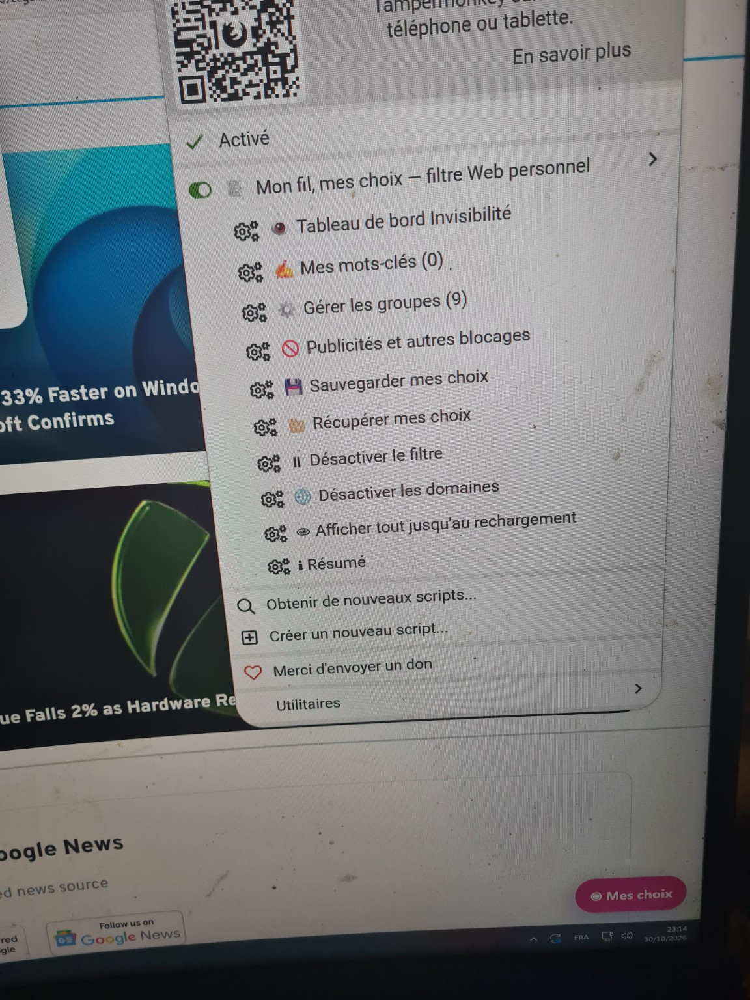
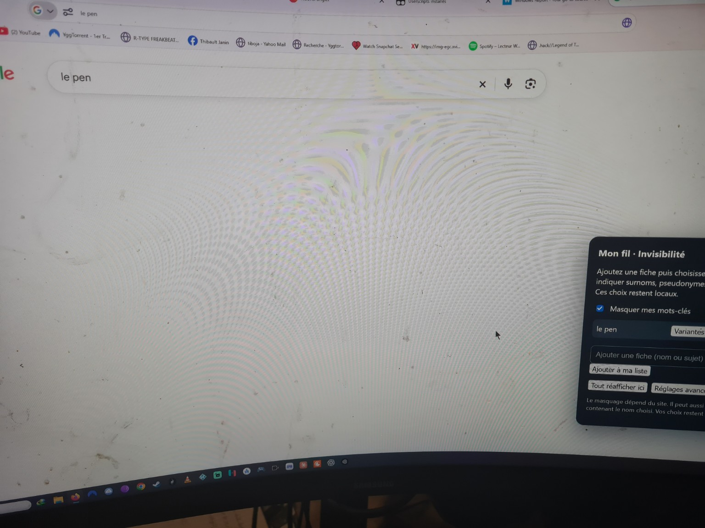
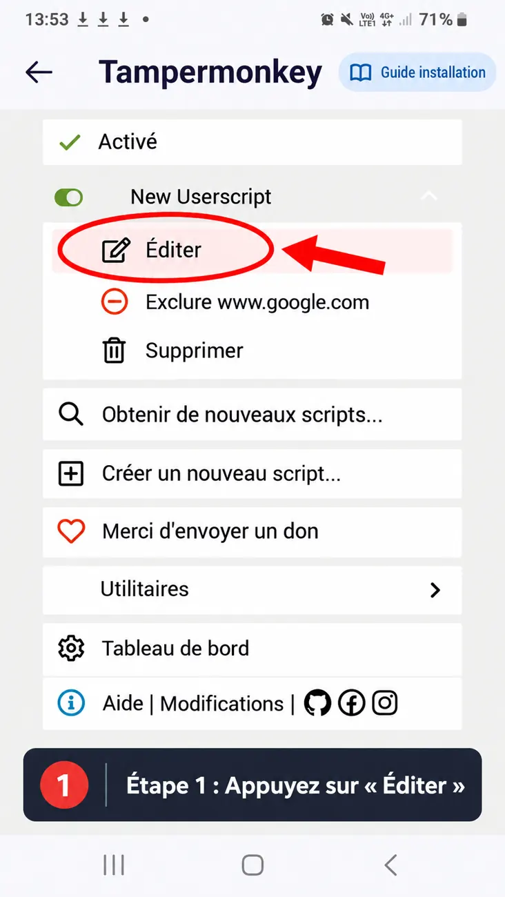
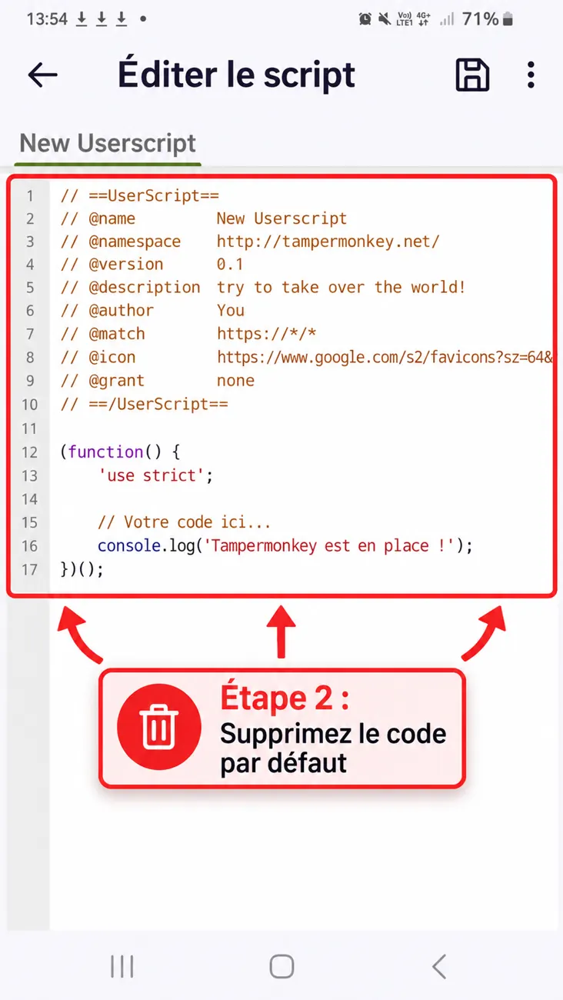
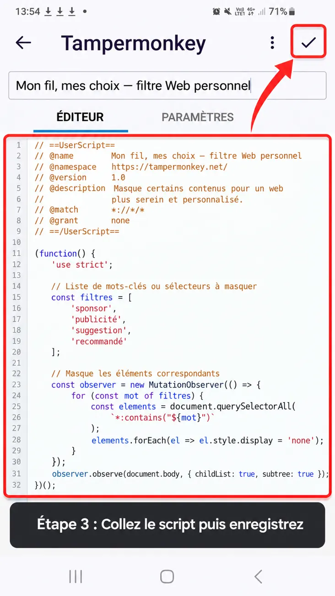
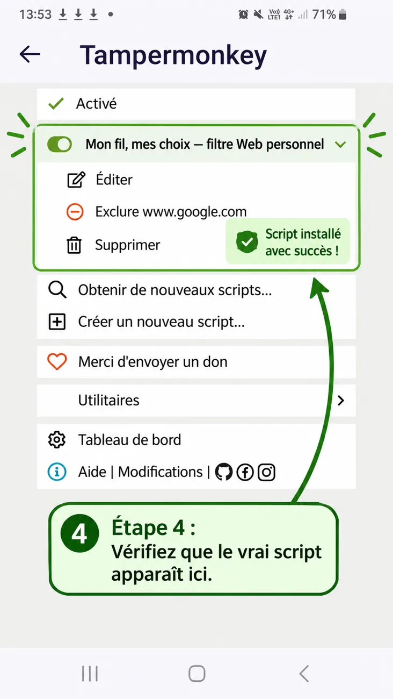

Ce guide a été pensé pour les personnes qui ne connaissent pas encore les scripts utilisateur. Vous y trouverez les étapes dans le bon ordre, des captures d’écran illustratives et des solutions si quelque chose ne fonctionne pas.
📌 Sans connaissances techniques avancées🖼️ Avec captures d’écran illustratives🔒 Filtrage local dans le navigateur
LE GUIDE POUR TOUT LE MONDE · VERSION 4.1.0
Une installation de quelques étapes. Un Web vraiment à vos choix.
Marre de retrouver toujours les mêmes noms, sujets ou annonces ? Avec Tampermonkey, vous décidez de ce qui doit disparaître de votre propre écran. Vous ne supprimez rien chez les autres. Et vous pouvez tout réafficher à volonté.
Vous n'avez pas besoin de savoir programmer. Les images ci-dessous sont de vraies photos de tests sur Windows : leur aspect peut varier selon le navigateur et la version de l'extension.
01
Installer Tampermonkey
Ouvrez le site officiel depuis un navigateur compatible, puis installez l'extension. Sur Android, choisissez un navigateur qui prend effectivement en charge les extensions et Tampermonkey : ce n'est pas possible dans tous les navigateurs mobiles.
02
Installer notre script
Cliquez sur Installer « Mon fil, mes choix ». Si Tampermonkey propose l'installation, validez. Sinon, utilisez le bouton « Copier le script complet » plus bas et collez-le dans Créer un nouveau script, puis enregistrez.
03
Vérifier l'activation
Sur une page Web ordinaire, ouvrez l'icône Tampermonkey. Vérifiez que « Mon fil, mes choix — filtre Web personnel » est activé. Si vous lisez « Tampermonkey n'a pas accès à cette page », essayez un site Web normal puis vérifiez les autorisations de l'extension.
04
Choisir vos règles
Ouvrez ◉ Mes choix en bas de la page, ou « Tableau de bord Invisibilité » dans Tampermonkey. Saisissez un mot ou une expression, cliquez sur « Ajouter à ma liste », puis utilisez « Variantes » pour les autres orthographes.
05
Voir le résultat
Actualisez votre page. Le script tente de cacher les résultats, publications et cartes concernés. Une recherche exactement égale à une expression bloquée peut masquer toute sa zone de résultats Google, en laissant la barre de recherche accessible.
06
Garder le contrôle
En cas de blocage excessif, sélectionnez « Tout réafficher ici » ou désactivez le filtre. Les paramètres restent modifiables à tout moment ; aucune décision n'est définitive.
À quoi cela ressemble réellement ?

1. Le menu Tampermonkey et ses commandes.2. Le tableau de bord, avec les expressions et leurs variantes.

3. Une recherche filtrée : le moteur reste utilisable.
Toutes les fonctions, simplement
👁️ Invisibilité
Cache les cartes et résultats identifiés, même sur certains fils qui se chargent progressivement. Ce n'est pas un blocage de compte chez les plateformes.
✍️ Mots-clés et variantes
Ajoutez des noms, sujets et pseudonymes personnels. Les variantes servent à reconnaître plusieurs orthographes d'un même terme.
⚙️ Neuf groupes
Activez ou désactivez des ensembles complets, sans devoir modifier le code. Certaines règles peuvent masquer également des articles qui critiquent le sujet.
🚫 Publicités et domaines
Masquage cosmétique facultatif de certains emplacements publicitaires ; possibilité d'ajouter des domaines. Cela ne bloque pas toutes les requêtes réseau.
🔎 Recherche libre · v34
Option désactivée par défaut : tente de masquer les annonces sponsorisées reconnues sur certains moteurs. Elle ne modifie ni les enchères publicitaires ni le classement naturel.
🌍 Comparer les moteurs · v35
Ouvrez une recherche dans Google, Bing, DuckDuckGo, Qwant ou Startpage. Un clic ouvre le moteur choisi ; aucun comparatif automatique des résultats n'est actuellement calculé.
💾 Sauvegarde Android ↔ Windows
« Sauvegarder mes choix » produit un fichier JSON. Transférez-le puis choisissez « Récupérer mes choix » sur l'autre appareil. C'est un transfert manuel, pas une synchronisation cloud.
↩️ Réafficher ou désactiver
Vous pouvez revoir temporairement le contenu, désactiver des groupes ou couper le filtre. Tout est local et réversible.
Problèmes fréquents : solutions faciles
Je ne vois pas le menu sur Windows.
Ouvrez une page Web classique, puis cliquez sur l'icône Tampermonkey. Contrôlez l'interrupteur du script et les autorisations d'accès aux sites. Les pages internes du navigateur ne permettent généralement pas l'exécution des scripts.
J'ai ajouté un mot, mais il apparaît toujours.
Vérifiez « Masquer mes mots-clés », rechargez la page et ajoutez éventuellement une variante. Certains blocs des moteurs et réseaux ne sont pas détectables. Dans Tampermonkey, vérifiez que le script est à jour.
Une page semble vide : ai-je cassé quelque chose ?
Non : si la recherche correspond exactement à une expression que vous avez bloquée, les résultats Google peuvent être masqués. Essayez « Tout réafficher ici » ou désactivez cette règle pour rétablir l'affichage.
Mes réglages Android n'apparaissent pas sur Windows.
Les réglages ne se synchronisent pas automatiquement. Exportez un fichier JSON depuis le menu Tampermonkey sur le premier appareil, puis importez-le depuis le second.
Pourquoi Tampermonkey demande-t-il plus d'étapes que l'APK ou l'EXE ?
L'APK et l'EXE sont des applications à installer. Tampermonkey est une extension qui charge un script dans un navigateur : il faut d'abord autoriser l'extension, puis installer le script. En échange, vous personnalisez très finement les contenus visibles directement sur les pages compatibles.
À savoir : ce filtre n'est pas un moteur de recherche neutre, ni un outil garantissant l'absence de publicité. Il modifie localement l'affichage, pas les sites originaux. Un mot-clé peut cacher un contenu pertinent ou critique. Vos choix restent sur votre appareil, sauf si vous exportez volontairement votre sauvegarde.
Guide spécial téléphone
Installer le script en copiant le code sur Samsung
Ce parcours est prévu si Tampermonkey affiche encore « New Userscript » sur votre téléphone. Les visuels sont des illustrations annotées, inspirées de l'interface mobile : les boutons exacts peuvent varier selon votre navigateur et sa version.
Dans Tampermonkey, touchez la ligne « Éditer » sous le script créé par défaut.

Illustration 1 — repérez le bouton Éditer.
02
Effacez le code présent
Dans l'éditeur, sélectionnez tout le code par défaut puis supprimez-le. N'en gardez aucune ligne.

Illustration 2 — supprimez intégralement le contenu existant.
03
Collez le véritable script puis enregistrez
Revenez sur notre site, utilisez « Copier le script », puis collez son contenu dans l'éditeur Tampermonkey et utilisez l'icône de sauvegarde. Ne recopiez pas le faux code présent dans l'illustration.

Illustration 3 — le code montré est fictif ; seul le bouton et la procédure comptent.
04
Vérifiez le nouveau nom
Le script doit s'appeler « Mon fil, mes choix — filtre Web personnel » et être activé. Revenez sur Google, rechargez la page et ouvrez « Gérer les groupes (9) ».

Illustration 4 — vérifiez le nom du script et l'interrupteur vert.